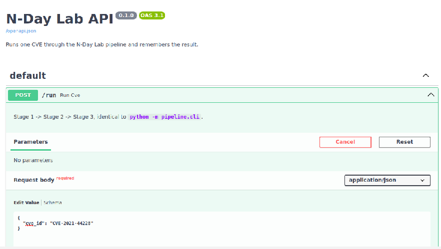

Narrow FYP1 claim (by design, per supervisor feedback): the pipeline runs end-to-end on real, named CVEs. A full evaluation-harness accuracy claim — Feasibility Agent decision accuracy, template-reuse accuracy, deploy success rate, time saved vs. manual authoring — is explicitly FYP2 future work, not claimed here.
Given a CVE ID, the pipeline ingests NVD, CISA KEV, and Exploit-DB data into one deterministic Spec, runs a bounded FeasibilityAgent judgment (deny-list first, then an AI-assisted verdict capped at 3 NVD reference fetches), checks a local playbook library for a reusable match, and only generates a fresh Ansible playbook with PlaybookGenerationAgent when nothing matches — syntax-checked, retried up to 3 times, model backend swappable (Gemini / Claude / DeepSeek) via one environment variable.
Feasible, matched-or-generated specs get a real ansible-playbook run (not a dry run), and a reviewer gets a scoped, revocable WireGuard ticket instead of broad network access — each ticket is meant to map to one iptables rule for one target.
This project inherits an unfinished pipeline from a senior (originally "LabDevisor"); as of 20 Nov 2026 it has been fully taken over, rebuilt, and renamed N-Day Lab.

Context (slow manual lab authoring, no deterministic validation design in comparable tooling) leads to the artefact: a feasibility-gated, reuse-before-generate pipeline that deploys for real and issues scoped access — with the gaps found in that real deployment feeding the FYP2 validation harness design.
The distinctive logic is not "AI writes a playbook." It is: ingest → gate on feasibility → prefer a reviewed match over a fresh generation → deploy for real → gate access per ticket.
Spec. No model involved at this stage.
FeasibilityAgent overwrites it with a bounded AI judgment (≤3 NVD reference fetches). Blocks proprietary/firmware targets.
LibraryIndex matches vuln-class + software against a local playbook catalogue. Reusing a reviewed playbook is cheaper and safer than generating fresh.
PlaybookGenerationAgent only runs on feasible, unmatched specs. Syntax-checked, retried ≤3×; keeps the last draft + error log on failure.
ansible-playbook run, then a scoped WireGuard ticket: one keypair, one assigned tunnel IP, one intended iptables ACCEPT rule.
Stage 1 (deterministic_extract.py) sets a baseline verdict by deny-list match alone — deterministic, no model. Stage 2 (FeasibilityAgent.assess()) overwrites it with an AI-assisted judgment that can also fetch NVD reference URLs, capped at 3 calls so a flaky model can't loop forever.
Open question carried into Limitations: NVD's April 2026 enrichment policy now only fully enriches CVEs in KEV / gov-used / critical software. A data-poor, non-KEV CVE can resolve vendor/software to "unknown" — risking either a silent default to "feasible" (deny-list has nothing to match) or an overly conservative block (agent has too little to confirm feasibility). Flagged, not yet empirically confirmed on a live case.
factory.py's feasibility_model_from_env() / playbook_model_from_env() pick Gemini, Claude, or DeepSeek from one environment variable. This was not a theoretical nicety — validated as a real operational save during live deployment this week:
A successful ansible-playbook exit code is not "ready", and a syntax-valid AI-generated playbook is not "correct". This section documents what the pipeline checks today, and what real deployment this week showed it does not yet catch.
LibraryIndex requires both vuln-class and software to match before reuse.ansible-playbook run (not --syntax-check) against an inline lab_targets inventory, --connection=local.lab_bind_host / lab_port passed as extra-vars; ok=True is only rc==0 — it does not independently confirm the target is listening.LAB_BIND_HOST env var silently defaults to 127.0.0.1 — deploy reports ok:true for a target that is unreachable from outside the host, with no error raised anywhere.--publish {{ lab_bind_host }}:{{ lab_port }} templating exactly right and still expose nothing, if it also creates its Docker network with --internal — confirmed on the CVE-2024-4577 playbook. Neither the syntax check nor the feasibility gate catch this.INPUT chain — but Docker's own DNAT for --publish'd containers routes through FORWARD / DOCKER-FORWARD instead. Confirmed live: any issued ticket could reach every deployed target, not just its own.None of the three gaps above were caught by ansible-playbook's exit code, the generator's syntax check, or the feasibility gate — each only surfaced once someone actually tried to reach the deployed target from outside the host. This is the concrete evidence motivating RQ3 and the FYP2 validation harness, not a hypothetical concern.
Methods map each research question to an objective and expected outcome. Scope is deliberately narrow for FYP1 — see note under Problem Statement.
| No. | Research question | Objective | Methods | Expected outcome |
|---|---|---|---|---|
| RQ1 | How can CVE intelligence (NVD/KEV/Exploit-DB) plus a bounded LLM judgment decide, per CVE, whether a lab can be safely and deterministically reproduced? | RO1 — Feasibility-gated ingestion pipeline | LiteraturePolicy docs (NVD)Existing systems | A working feasibility gate, tested against real CVEs including a data-poor, non-KEV case. |
| RQ2 | To what extent can reuse-before-generate plus syntax-constrained AI generation produce a deployable playbook for a previously-unseen CVE without a hand-authored recipe? | RO2 — End-to-end deploy + scoped access on real CVEs | Prototype buildCase study (Log4Shell, CVE-2024-4577) | Pipeline reaches a reviewer-reachable lab end-to-end for named CVEs, with no hand-written recipe for either case. |
| RQ3 | What gaps exist between "the playbook deployed" and "the lab is correct and safely scoped", and what should a deterministic validation harness check? | RO3 — Documented failure-mode checklist for FYP2 | Field observationRoot-cause analysis | A concrete, code-grounded checklist of deploy-time and access-time failure modes (3 found already) to seed the FYP2 harness design. |
Design Science Research Methodology (identify, define, design, demonstrate, evaluate, communicate). The "define" stage was revisited four times between Sept and Nov 2026 (see Timeline) before landing on the current scope — documented honestly rather than presented as a single linear plan.
To fill in: which course weeks / labs this maps to (left blank rather than guessed — add your own module/week references here).
| Platform | Type | Limitation for this project | Selected? |
|---|---|---|---|
| FYP-2B — Red Team Provisioning Pipeline | Recipe-based orchestration (this lineage) | Strong orchestration + post-deploy HTTP verification pattern, but every vulnerability is a hand-authored YAML recipe. No mechanism to go from a new CVE ID to a lab without a person writing that recipe first. | — |
| Vulhub / DVWA / Metasploitable | Pre-built vulnerable-image catalogues | Fixed, pre-selected CVE set. No feasibility judgment, no live CVE-driven generation — new CVEs simply aren't covered until someone manually adds them. | — |
| Generic AI-IaC-generation demos | LLM-drafted Terraform/Ansible from a prompt | Typically stop at "the model produced syntax-valid IaC." Rarely check that the deployed result is reachable, correctly bound, or correctly access-scoped — exactly the gap found in this project's own pipeline this week. | — |
| This project (3E — N-Day Lab) | CVE-driven, feasibility-gated automation | Validation harness itself is FYP2 future work, not yet built; Lab D / Forgejo integration not yet started. Both gaps stated openly, not hidden. | ✓ SELECTED |
FYP-2B automates deployment of a recipe a human already wrote. This project automates the step before that: deciding feasibility and drafting the recipe itself, directly from a CVE ID.
Most comparable tooling treats "deploy succeeded" as the finish line. This project's contribution is treating that as the start of validation — evidenced by three real gaps found only by actually trying to reach a deployed target.
Deliberately self-hosted first. Lab D integration (Forgejo) is scoped as a distinct, later step — not claimed as done, and not conflated with proving the core pipeline works.
This is the project's actual pivot history, not a schedule planned in advance — the FYP direction changed four times between September and November 2026 before landing on the current scope. Dates are approximate to the month except where noted.
INPUT/NDAYLAB_TICKETS to DOCKER-USER so scoping actually holds for Docker-published targets.out/ folder.